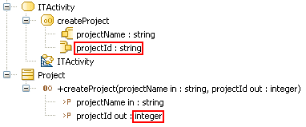

The type or the maximum multiplicity of a pin belonging to a CallOperationAction does not match its matched parameter.
UML constraint: The type, ordering, and multiplicity of an argument or result pin are derived from the corresponding owned parameter of the operation.
Example:

The Project CallOperationAction is invalid because the type of its projectId pin does not match the parameter type it is matched with.
When you get a R1130 error, you can resolve it by doing one of the following: